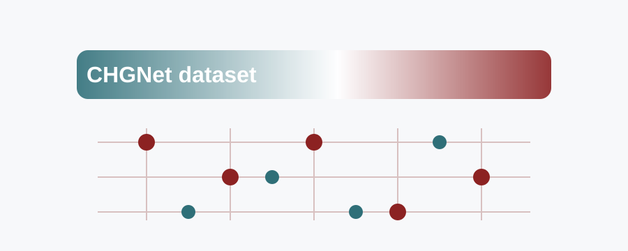

rsf-24-12-20016-thermoelectric-heuslers
Данные и модели для термоэлектрических double half-Heuslers
Наборы данных CHGNet, train/validation/test split, checkpoint модели, ноутбуки fine-tuning и оценки, а также данные электронного показателя добротности.
CHGNetdatasetthermoelectricsJupyter
Jupyter Notebook · 2026-03-23
GitHub